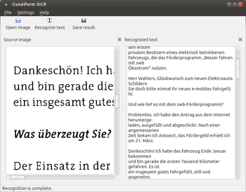

cuneiform-qt
Dieser Artikel wurde für die folgenden Ubuntu-Versionen getestet:
Ubuntu 14.04 Trusty Tahr
Zum Verständnis dieses Artikels sind folgende Seiten hilfreich:
 cuneiform-qt
cuneiform-qt  ist ein in Qt programmiertes Frontend für Cuneiform-Linux, das eine einfache Benutzeroberfläche zur Texterkennung liefert. Unterstützt werden die Eingabe-Dateiformate PNG, JPG, BMP und TIF, als Ausgabeformate können einfacher Text, Nur-Text mit TeX-Absätzen, RTF, HTML und hOCR gewählt werden.
ist ein in Qt programmiertes Frontend für Cuneiform-Linux, das eine einfache Benutzeroberfläche zur Texterkennung liefert. Unterstützt werden die Eingabe-Dateiformate PNG, JPG, BMP und TIF, als Ausgabeformate können einfacher Text, Nur-Text mit TeX-Absätzen, RTF, HTML und hOCR gewählt werden.
Installation¶
Voraussetzung für die Verwendung ist eine Qt-Installation in Version 4.3 oder höher, sowie Cuneiform-Linux.
cuneiform-qt selbst liegt nicht in den Paket-Quellen vor, der Quellcode kann über die Projektseite  heruntergeladen werden.
heruntergeladen werden.
Hinweis!
Fremdsoftware kann das System gefährden.
Das Archiv entpacken[1] und kompilieren. Dazu muss zunächst im Terminal[2] im erstellten Verzeichnis cuneiform-qt-0.1.x des entpackten Archivs mit den Befehlen
qmake-qt4 cuneiform-qt.pro qmake-qt4
ein Makefile erstellt werden, die weiter Kompilierung[3] (make etc.) erfolgt dann wie gewohnt.
Nach erfolgreicher Installation befindet sich unter GNOME ein Start-Eintrag in
"Anwendungen -> Büro -> Cuneiform-Qt"[4]
Außerdem wird unter GNOME/Nautilus auch ein Eintrag im Kontextmenü (" -> Öffnen mit -> Cuneiform-Qt") angelegt.
-> Öffnen mit -> Cuneiform-Qt") angelegt.
Voraussetzung zur Nutzung des Programms ist natürlich eine funktionsfähige Cuneiform-Linux-Installation.
Konfiguration¶
 Im Reiter "Settings -> Configure" werden die Vorauswahl für die gewünschte Sprache (nutzbar sind alle in Cuneiform-Linux unterstützten Sprachen), sowie das Ausgabe-Format (ebenfalls die verwendbaren Formate) gemacht. Außerdem muss dort ggf. das Verzeichnis für die Cuneiform-Linux-Installation angegeben werden (liegt im Normalfall in /usr/bin/cuneiform, svn-Version in /usr/local/bin/cuneiform).
Benutzung¶
Über "File -> Open Image" oder die entsprechende Schaltfläche kann eine Datei im unterstützten Format geladen werden; sie erscheint im linken Teil des Programmfensters (mit einer entsprechenden Cuneiform-Version können alle gängigen Bildformate verarbeitet werden). Eine Skalierung ist nicht möglich. Mit "File -> Recognize text" (oder der Schaltfläche) wird die Erkennung gestartet, das Ergebnis wird rechts angezeigt. Mit "Save Result" wird das Ergebnis gespeichert. Ein Anhängen an bestehende Dateien ist dabei leider nicht möglich, die Ergebnisse müssen also in einzelnen Dateien gespeichert werden. Die Fenster zum Anzeigen der geladenen Bild-Datei ("Source Image") sowie des Resultates ("Recognized text") lassen sich auch schließen, allerdings nicht wieder öffnen, dazu muss das Programm neu gestartet werden, es funktioniert allerdings auch ohne "Anzeige". Beim Schließen des Programms erfolgt auch keine Warnung, wenn das Ergebnis noch nicht abgespeichert sein sollte.
Cuneiform-qt eignet sich für einfache Texterkennungs-Aufgaben; die Qualität der Erkennung ist aufgrund des verwendeten Cuneiform-Engines sehr gut. Das Programm befindet sich noch in einem frühen Entwicklungsstadium, die Implementierung etlicher weiterer Features ist geplant (z.B. Batch-Modus, Bearbeitung der Vorlagen, Scanner-Integration, siehe TODO-Liste auf der Projektseite); leider stagniert die Entwicklung seit April 2009.
Alternativen¶
YAGF - ein ebenfalls auf Cuneiform-Linux aufbauendes Frontend mit umfangreicheren Möglichkeiten
vietOCR - vergleichbares Programm auf tesseract-ocr-Basis
OcrGui - OCR-Programm, das neben tesseract-ocr auch GOCR als OCR-Engine verwenden kann; noch in relativ frühem Entwicklungsstadium
- Erstellt mit Inyoka
-
 2004 – 2017 ubuntuusers.de • Einige Rechte vorbehalten
2004 – 2017 ubuntuusers.de • Einige Rechte vorbehalten
Lizenz • Kontakt • Datenschutz • Impressum • Serverstatus -
Serverhousing gespendet von